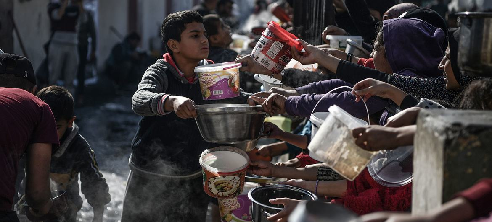
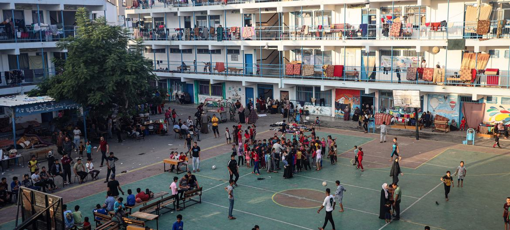
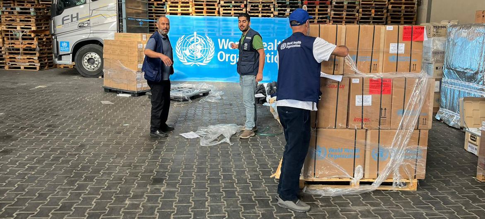

How is the UN helping civilians in Gaza?
 The UN says Gaza is facing a food crisis. Saturday, January 13, 2024
Despite the immense dangers and obstacles, the UN continues to deliver desperately needed
humanitarian aid in Gaza. Here is an overview of the humanitarian efforts in the occupied territory.
In conflict zones across the world, UN humanitarian workers work under extreme conditions,
but it is hard to exaggerate the risks they are facing in Gaza, where hospitals, schools, and refugee
camps are not immune to the threats of bombardment.
Evacuation orders continue to be issued, pushing more people south in fear for their safety.
Many roads are becoming impassable as more informal sites continue to spring up. In addition, the cold
winter season, with strong winds and torrential rains, is adding another layer of challenges to
UN convoys carrying supplies to the people in need.
The UN is leading aid efforts in Gaza, working closely with all humanitarian partners, including
international and national NGOs.
Keeping track of the aid
 Thousands of people are sheltering in UNRWA schools in Gaza after fleeing their homes.
The UN aid coordination office (OCHA) is tasked with ensuring that the flurry of response efforts
is as efficient as possible, avoiding duplication, and accurately prioritizing aid delivery according
to needs.
The situation is catastrophic: food and water are in short supply and nearly non-existent
in northern Gaza, and the few remaining health centres in the Strip are overwhelmed with patients.
Aid is available, but convoys face excessive delays at Israeli checkpoints, agreed routes that are
impossible to navigate because of the bombings, and repeated access denials by Israeli authorities.
As a result, only a fraction of planned aid deliveries is getting through.
Shelters under fire
 Medical supplies organized by WHO are unloaded in a warehouse in Gaza.
UNRWA, one of the oldest and largest of the UN agencies, was set up seven decades ago, to provide
relief for Palestine refugees. In Gaza, UNRWA operates schools, runs relief and social programmes,
and healthcare services.
The crisis has severely affected all of UNRWA’s operations in the Strip: as of 10 January,
some 1.7 million people were sheltering in, or nearby, 155 UNRWA facilities, which are
“far exceeding their intended capacity” and have been targeted by bombardments: the agency
says that their installations have received more than 60 direct hits, with at least 319
displaced people killed in the agency’s shelters and more than 1,135 injured since 7 October.
In addition, more than 140 UNRWA colleagues are known to have been killed to date.
UN Entities in Palestine
In all, 23 UN agencies, funds, and programmes are present in Palestine, under the leadership
of the Resident Coordinator, The United Nations Country Team (UNCT) in Palestine comprises all
heads of UN agencies operating in the occupied Palestinian territory (oPt).
As well the entities mentioned above, many major agencies are represented in the oPt, including
the International Labour Organization (ILO), UN Environment Programme (UNEP), UN Women, the UN
Development Programme (UNDP), and UNESCO.